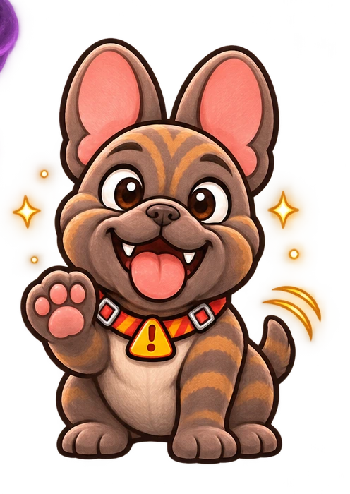
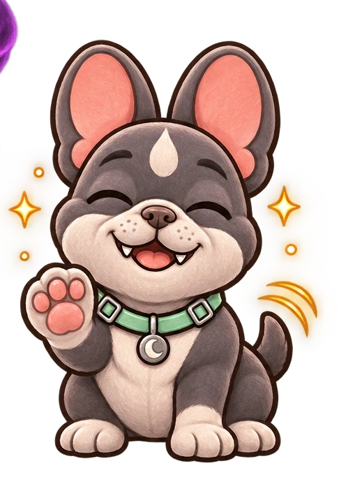

3つのレーンで落下地点へ
猫や犬は左・中央・右の3つのレーンから落ちてきます。まずは真下へ移動。リングを目印に、タイミングよくアクションしよう。
ADまたは ← / → で移動
PC / WINDOWS · IN DEVELOPMENT
雨の日のレスキュー仲間
猫の案内で、黒い霧の向こうへ。
猫をキャッチ、大きな犬は傘でパリィ。
大切な仲間を、おうちへ連れ帰ろう。


 キャラクターイラストによるイメージ画像
キャラクターイラストによるイメージ画像WEB PLAYTEST / TOUCH CONTROLS
Web版は、基本の遊びを気軽に体験するための試作版です。
開発中のWindows版とは内容・仕様が異なります。タッチ操作でお楽しみください。
itch.ioを新しいタブで開きます。このサイトの動画・ゲーム紹介はWindows開発版のものです。
 ちょっと、迷子になっただけ。
ちょっと、迷子になっただけ。01 / THE RESCUE
不思議な黒い霧のせいで、おとなしかった犬たちが巨大化して大暴れ。見覚えのある首輪はそのままなのに、おうちへの帰り道がわからなくなってしまいました。
そんな異変に気づいたのは、霧の影響を受けない一匹の猫。かごと傘を手に、その後を追いかけよう。キャッチとパリィを重ねて、霧の中の仲間を取り戻す冒険へ。
「怪物じゃないよ。黒い霧に捕まった、あの子だよ。」— 案内役の猫
WATCH THE RESCUE
開発版プレイ動画・ステージ1の救出を収録
3レーンのアクションからボス戦、仲間との再会まで。
02 / FIND YOUR TIMING
キャッチして、霧をはじいて。
2つのアクションで、仲間を救おう。
画面は開発中のものです。製品版では内容が変更になる場合があります。
猫や犬は左・中央・右の3つのレーンから落ちてきます。まずは真下へ移動。リングを目印に、タイミングよくアクションしよう。
猫はかごでキャッチ、霧に操られた大きな犬は傘でパリィ。連続で成功させて、ボスの守りを崩すチャンスをつかもう。
ボス戦では8回連続で成功すると、次のパリィ成功で黒い霧が1層消えます。さらに速くなる第2段階を乗り越え、仲間を救い出そう。
猫 → 犬 → 猫でハートが1つ回復。犬 → 猫 → 犬でシールドを1回分獲得。体力が満タンなら、回復は救急キットとして必要なときのためにストックされます。
BEYOND THE MIST
ミスをするとコンボは途切れますが、
一度晴らした霧は戻りません。
速い追加コンボに挑んで、特別な記念写真を手に入れても。
自分のペースで救出を目指しても。
仲間を助けるのに、満点はいりません。
03 / FRIENDS TO BRING HOME
公園、パン屋さん、雨の路地へ。
救出の思い出を、仲間図鑑に残そう。

こわそうに見えて、実は甘えん坊。
公園のベンチと黄色いボールが大好き。

人懐っこくて、好奇心いっぱい。
いつもの軒先には焼きたてパンの香り。

おとなしくて、そっと寄り添う子。
雨上がりの水たまりと静かな路地が好き。
仲間図鑑や記念写真を眺めたり、傘の色を変えたり。60秒のデイリーお天気チャレンジにも挑戦しよう。
THE NEXT CHAPTER
《It Rains Cats n Dogs · 雨の日のレスキュー仲間》
PCでの冒険に向けて、ただいま準備中。
対応予定：Windows PC・発売日と価格は後日発表
ストアページ公開後、ウィッシュリストへのリンクを掲載します。